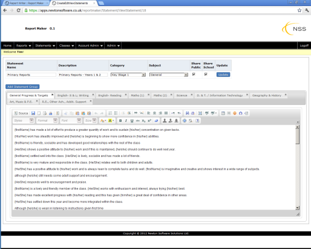

|
Report Maker has gone online! No need for any software to be installed on your PC, Mac, iPad etc. All you need is a web browser.
Report Maker allows pupil reports to be generated very quickly. Since its initial release in 1996 Report Maker has evolved into a professional product that is used by teachers,
schools and other organisations worldwide.
 Report Maker allows teachers to create pupil reports and Record of Achievements (ROA).
The reports are generated from a 'database' of statements, which can be customised to suit the individual teacher.
Report Maker enables reports to be generated very quickly and easily. Used in conjunction with your usual word processor
Report Maker can produce very professional looking and sounding reports. Report Maker features a main text box where each report is
generated and from a bank of statements (see screen shot above). There are various statement banks that can be used "out of the box". These can be completely customised
with your own statements. When the report is complete it can be copied and pasted into a word processor for printing.
It will be clear when you give the program a go! You can create as many statement files as necessary.
See the testimonials opposite to see the kind of feedback that has been provided by the users of Report Maker.
Main Features
- Create Pupil Reports in minutes rather than hours
- Works on any web enabled device, including PCs, Macs, iPads, mobiles.
- Large pool of statement files are freely available to use.
- Use in conjunction with your standard word processor
- Utilise existing word processor templates
- Email support available
|
Testimonials
The names have been removed to protect the innocent. If you require independent references then drop me an email and I will provide email addresses.
Comment by Teacher A
I've been using Report Maker for my year 7 and 10 reports... it's an excellent program! so simple to use. Its saved loads of time and I'm probably producing better reports now... can't be bad!... Thanks.
Comment by Teacher B
Great tool - I can produce a class set of ICT reports in just under an hour - compared with over 2 hours the old fashioned way. What's more, because I spent a lot of time and effort on producing the comment bank, I think the end result is a higher quality and more informative document. I (almost) look forward to the next round of reports !!!
Comment by Teacher C
I have just shown the programme to the rest of the staff. You got a round of applause and a standing ovation.
Comment by Teacher D
I had to tell you that when I handed my reports to the head last week he was very impressed. I used some of the comments already written by other teachers and adapted them to suit my children. In the summer holiday I hope to look at them again and write my own comments ready for next year. Thanks for program - it was GREAT!
Comment by Teacher E
I downloaded this software from the net - and it's a beauty. It's so good, I know the head won't like it - so I'm trying to customise it so that there are so many statements she won't suss me out.
|